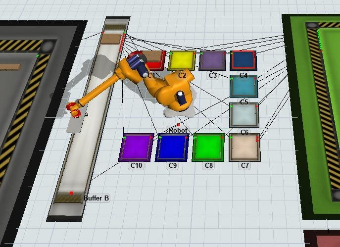

Robotic Sorting Station Simulation
Discrete-event simulation of a sorting facility with two buffers, a robot and ten destination carts.

From challenge to engineering analysis
My work: data preparation and destination prioritization
Worked with a dataset of around 9,000 items. Developed MATLAB scripts to visualize destination frequency over time using a heatmap and to rank references by frequency. These processed inputs helped define prioritization rules before running the FlexSim model.
Industrial challenge
The system could route to as many as 250 possible destinations, while only ten carts could be available at the robot at once. Destination selection had to balance throughput against manual interventions and cart changes.
Simulate an operating system
Built and analyzed the Flexibac sorting model, including FIFO handling, cart allocation and manual versus robotic processing.
Evaluate throughput
Compared three scenarios using robot-processed volume, manual workload, waiting time and cart utilization.
Scope: The scenarios expose bottlenecks and trade-offs, rather than a claimed production deployment.